Next: Details to the Proof
Up: Appendix: Technical Details
Previous: Details to the Proof
Index
Details to the Proof of 11.3
We have to verrify the third equation listed in the proof.
Let us first find suitable expressions for
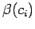 and
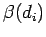.
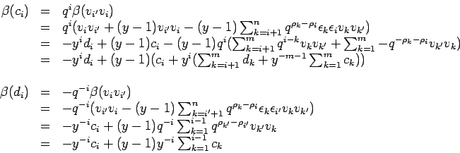
We obtain
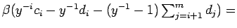
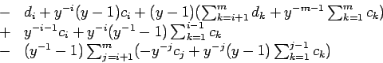
Let us focus attention to the summand displayed in the last line:
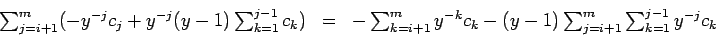
The second summand in this expression can be transformed in the following way:
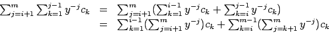
Thus:
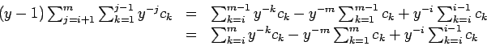
In order to get the last line you have to add
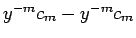. Substituting this result into the above expression yields
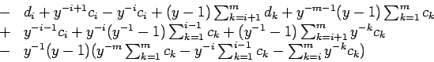
Now we see that almost all summands in this expression cancel each other an we
end up with
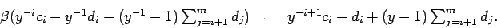
Sebastian Oehms
2004-08-13